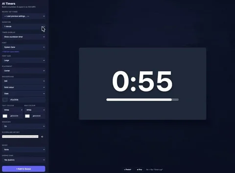

Experiment A / Browser timer generator
It worked.
I missed the craft.
I used Claude to build a browser timer generator. It could produce a countdown, but I missed the control over typography, animation and finish.

Tool recordingMotion unavailable · still shown Claude → Browser prototype → Timer export
Claude → Browser prototype → Timer export